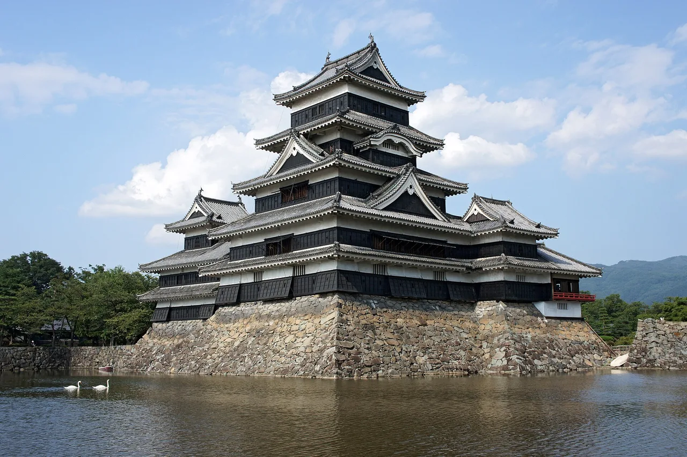

Nagano Travel Guide for Japanese Learners
Alpine peaks, the great Zenkō-ji temple, and snow monkeys in hot springs.

Nagano hosted the 1998 Winter Olympics and is Japan's mountain heartland. Visit the ancient Zenkō-ji, the bathing snow monkeys of Jigokudani, and the post towns of the Kiso Valley.
History & background
Nagano (長野) grew around the ancient temple of Zenkō-ji (善光寺) and the Nakasendō (中山道) highway post towns. It hosted the 1998 Winter Olympics, cementing its status as Japan's alpine heart.
What to see
- Zenkō-ji temple
- Jigokudani snow monkey park
- Matsumoto Castle
- Kiso Valley post towns (Tsumago/Magome)
Hidden gems
- Togakushi Shrine nestled in forested mountains north of Nagano city offers peaceful hiking and ancient spiritual atmosphere away from crowds.
- Kamikochi Alpine Plateau provides stunning summer trekking through pristine meadows and mountain streams in the Northern Japan Alps.
- Narai post town along the Kiso Valley preserves traditional wooden merchant houses and sake breweries with fewer visitors than its famous neighbors.
Some links above are affiliate links. We may earn a commission at no extra cost to you. We only list services we'd use ourselves.
What to eat
Shinshu soba and oyaki dumplings.
Getting there & when to go
Getting there: Nagano city is ~1h30m from Tokyo by Hokuriku Shinkansen.
Best time: Winter for snow monkeys in the steam; summer for cool alpine hiking.
When to go — season by season
Winter is for skiing and the steaming snow monkeys of Jigokudani (地獄谷). Summer offers cool alpine hiking; autumn colours the Kiso Valley (木曽谷) post towns.
Local culture
Shinshu (信州), Nagano's old name, remains deeply tied to local identity. You'll see it on soba packaging, sake labels, and tourism signage—locals use it with pride to distinguish their regional products from imitations elsewhere in Japan.
Oyaki (おやき) dumplings filled with vegetables or azuki beans are comfort food here, traditionally made by farmwives. Modern bakeries sell them, but the most authentic versions come from small mountain villages where recipes have passed through generations unchanged.
A suggested visit
See Zenkō-ji and the snow monkeys near Nagano City, or walk the old highway between the preserved post towns of Tsumago (妻籠) and Magome (馬籠). Matsumoto Castle (松本城) is a striking original keep.
Seasonal tip: Book Jigokudani snow monkey viewing November–March, but visit December–January for peak bathing activity; February can have fewer monkeys as food becomes scarce at higher elevations.
Local etiquette: When visiting Zenkō-ji temple, do not photograph inside the main hall (Hondō) without explicit permission; many pilgrims come for spiritual practice, and flash photography disrupts their experience.
The snow monkeys are a 30-min uphill walk from the bus stop — wear proper footwear in winter.
Some links above are affiliate links. We may earn a commission at no extra cost to you. We only list services we'd use ourselves.
Common questions
Q. How do I get to Nagano from Tokyo?
A. The Hokuriku Shinkansen takes about 1 hour 30 minutes from Tokyo. Book your ticket in advance during winter peak season when snow monkey visitors surge.
Q. When is the best time to visit Nagano?
A. Winter lets you see snow monkeys bathing in Jigokudani's hot springs; summer offers cool alpine hiking around the peaks. Each season has distinct appeal.
Q. What should I eat in Nagano?
A. Try Shinshu soba and oyaki dumplings—local specialties. Oyaki are baked, not fried, making them lighter than you might expect despite their hearty fillings.